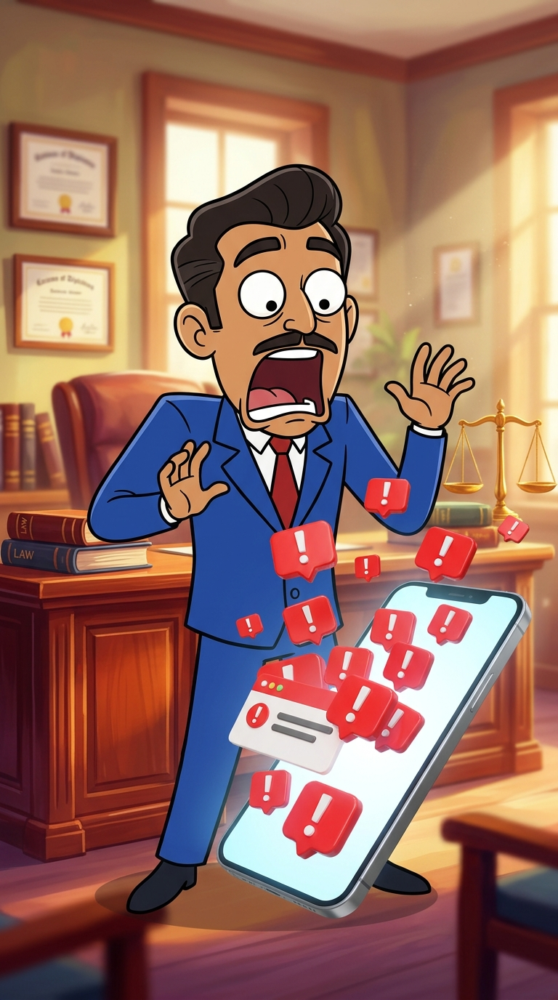

Opción 00 · Base
Plastilina Clásico (Saco Azul)
El primero que aprobaste con tus 4 poses ya listas. Estilo Aardman cálido en despacho tradicional.
Soy Abogado aprendiendo Ciberseguridad e Inteligencia Artificial porque es la forma de hacer justicia y proteger a las personas. Un solo Enter en un agente hoy afecta tu dinero, tu tiempo, tu trabajo, tus clientes y tus juicios.
La versión original + 7 estilos nuevos esculpidos en 9:16 para que elijas cuál aprobamos como rostro definitivo de la serie.
El primero que aprobaste con tus 4 poses ya listas. Estilo Aardman cálido en despacho tradicional.

Plastilina más joven con barba regia, lentes de pasta, hoodie bajo el blazer y alerta de Tribunal Virtual detrás.
Render 3D de estudio con piel suave, pin dorado de balanza, holograma rojo y el Cerro de la Silla al fondo.
Acabado satinado tipo Designer Toy con mazo judicial en mano y laptop en Error 404. Ultra reconocible en feed.
Estilo artesanal Wes Anderson con costuras y tela real. Da calidez humana inmediata para hablarle a familias y papás.

Expresión facial de comedia explosiva con contornos de tinta negra sobre despacho 3D desenfocado.
Plastilina con el Cerro de la Silla gigante en la ventana, MacBook, termo y sombrero regio en el escritorio.
Plástico ABS cinematográfico con gafete LEGAL ENGINEER y pantallas Error 404. Hipnótico para retención.
Los hallazgos exactos sobre enlaces 404, CPCNL Arts. 44–87 y Acuerdos 2011–2025 listos con su guion hablado y su descripción estilo Novato vs. Pro para disparar comentarios.
Pasa el cursor o toca cualquier tarjeta para activar la expansión acordeón horizontal.

Generados en vertical 1080×1920 con cortes dinámicos de zoom, cameo de Don Peluche y subtítulos Hormozi listos para montar tu voz.
Filtra por pilar temático o por impacto en la vida del usuario y expande cada día para leer y copiar su guion completo.
Hallazgos reales verificados en pjenl.gob.mx, CPCNL Arts. 44–87, Acuerdos 2011–2025 y pruebas de ciberseguridad.
No existe un PDF único público porque el manual operativo es de administración judicial interna (4-II/2014). Para litigantes rige: Segundo Título Especial del CPCNL (Arts. 44–87), TVConvenio.pdf, TVPrivacidad.pdf y Dirección de Informática (cst@pjenl.gob.mx · Tel. 81-2020-7751).
El link viejo /Instituto/micrositio-tutoriales.html da 404. Los tutoriales en MP4 vigentes viven en pjenl.gob.mx/Instituto/Tutoriales/, SiC@Vi y YouTube @PJENL.
No figura un módulo llamado Dialoga en reglamentos publicados; la mediación electrónica oficial opera bajo el IMASC (Acuerdos 8/2017, 16/2017, 2/2019, 10/2022, 13/2022 y enlace UMC 14/2017).
Regex con re.IGNORECASE normalizado contra genéricos (XAXX010101000 / XEXX010101000) y detección de CLABE de 18 dígitos con espacios o guiones sin falsos positivos en teléfonos o decimales.
Tope máximo estricto de 1 MiB (código 413) y validación de enteros (400) en peticiones POST.
Eliminado comodín *; restringido a localhost, 127.0.0.1 y GitHub Pages oficial (403 a terceros) + token LEGAL_LAB_API_TOKEN.
Bloqueo exclusivo concurrente fcntl.flock (POSIX) / msvcrt.locking (Windows) sobre archivo .lock para blindar la cadena de hashes.
Exhibir y resguardar pliego de posiciones de prueba confesional en formato electrónico cifrado hasta audiencia.
Firma electrónica judicial avanzada propia del PJENL además de la FIEL del SAT.
Clave en pensión alimenticia para girar retenciones salariales electrónicas directo a empresas o bancos sin ser parte.
Si cae el portal en día de vencimiento, manifiéstalo en la promoción; el juez debe recabar reporte de Informática antes de desechar.
Con auto favorable de autorización, solicita habilitación directa al Administrador si el juzgado olvidó encender el permiso.
Autorización por expediente, doble clave de envío y obligación del Secretario de certificar promociones al inicio y fin de jornada.
Expediente electrónico independiente para exhortos, despachos e incompetencias sin correo físico.
Expedición digital con validez oficial evitando filas y fotocopiado físico.
Acceso digital a carpetas en materias especializadas del PJENL.
Agenda de actuarios en línea y citas de comparecencia para entrega de billetes de depósito.
Modelo circular de soyvibecoder.com adaptado a tu carrera: ingresos digitales inmediatos + evidencia viva para Harvey.ai, Clara, Google y Microsoft.
Inspirado en el paquete descargable de /skills:
Haz clic en la empresa objetivo para resaltar automáticamente tus tarjetas más fuertes y copiar tu pitch directo para el Hiring Manager.
Dominio procesal mexicano (CPCNL, LFPDPPP, Código Penal/Civil) combinado con diseño de prompts jurídicos, flujos electrónicos y responsabilidad de agentes autónomos.
Laboratorio funcional en GitHub Pages integrando flujos reales de pensión alimenticia PJENL, librería normativa estructurada y endurecimiento Red Team verificado.
Implementación de scrubbing case-insensitive (RFC, CURP, CLABE), tope anti-DoS 1 MiB, CORS estricto con token HITL y auditoría SHA-256 con locks a nivel OS.
Clasificación de sistemas por nivel de riesgo (Inaceptable, Alto Riesgo RRHH/Finanzas), diseño de controles Human-in-the-Loop y trazabilidad ética.
Orquestación multi-agente (Imagen 3D, TTS, FFmpeg) para traducir riesgos complejos de ciberseguridad y ley en cápsulas educativas de alto alcance.
Experiencia guiando estrategia digital legal de alto crecimiento (de <100 a +40,000 seguidores orgánicos) y facilidad natural para explicar conceptos complejos con claridad.
Catálogo vivo desde 100_SITUACIONES_WATERS.csv. Busca cualquier palabra para improvisar o grabar nuevos episodios al instante.
| ID | Categoría | Escenario & Susto | Gancho ¡WATERS! | Riesgo & Blindaje | CTA |
|---|